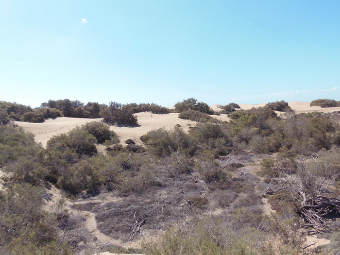

Ruta exterior
Este sendero es el de mayor recorrido de la Reserva que la atraviesa de este a oeste efectuando un arco que permite apreciar los diferentes tipos de dunas, fijas y móviles, y su alternancia con zonas llanas de arena endurecida y bandas de piedras, o paleobarras, que en el pasado constituyeron fondos de antiguas charcas u orillas del mar. En esta parte de la Reserva pueden verse algunas parcelas valladas con motivo de estudios científicos. A pesar de que el sendero aparece en general bien señalizado por postes con banda de pintura roja, los numerosos senderos producidos por el intenso tránsito de personas en esta zona de la Reserva puede dar lugar a algun que otro despiste.
En las proximidades de la Charca bifurca el sendero que conduce, direccion S, al Centro de la Cruz Roja y a la playa por la que se puede continuar en direccion O hacia el Faro, cuya silueta es visible casi desde todos los puntos d el recorrido, y que constituye el mejor epilogo a una original jornada de marcha
Tiempo estimado:38 minutos